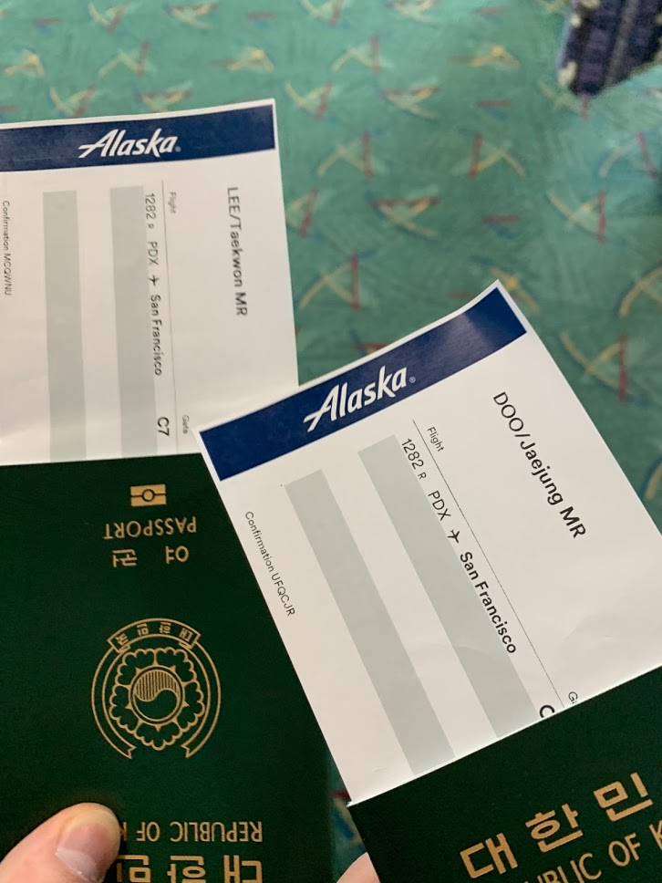
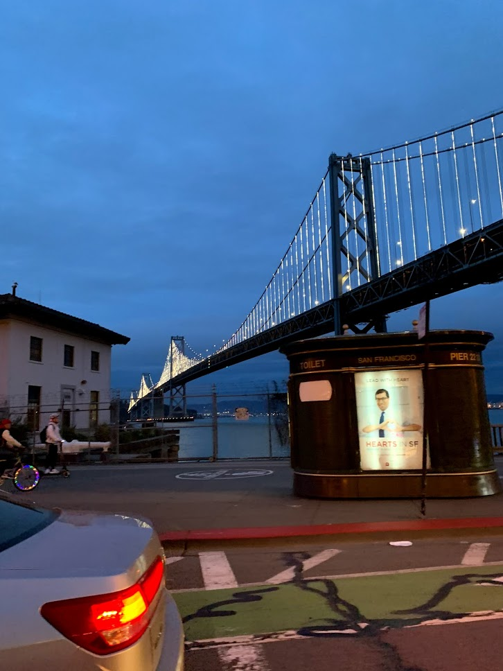
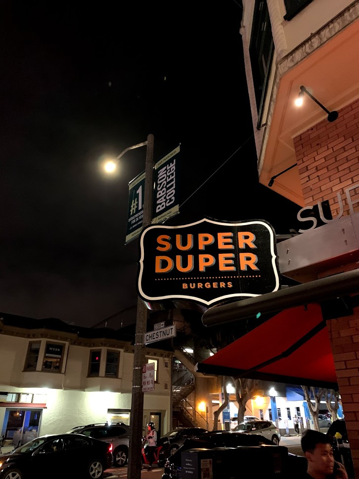
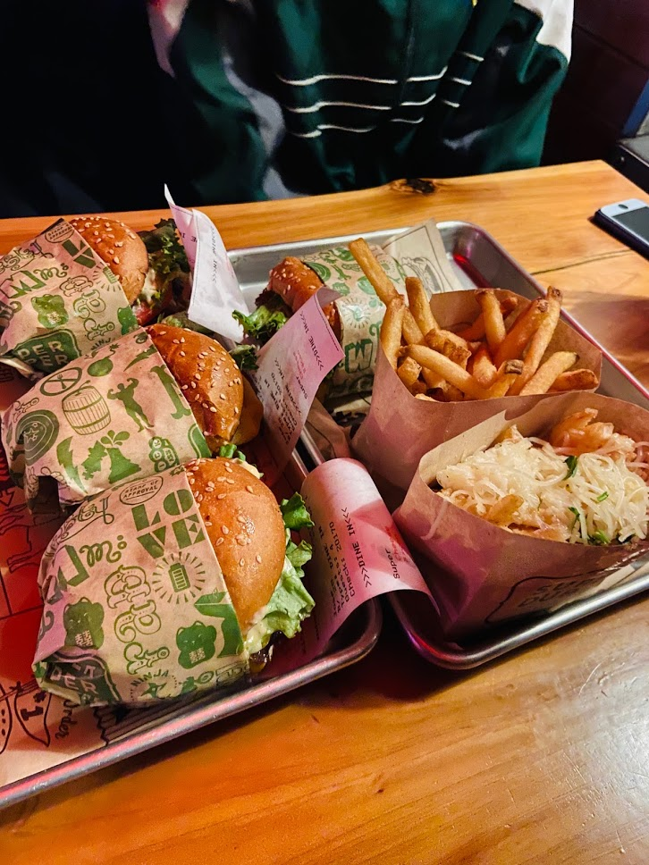

덜컹! 쿵!
깬 듯 안 깬 듯 잠에 취해 어렴풋이 뜨고 있던 눈이 그 순간 번쩍 뜨였다.
바로 창밖을 바라보았다. 맙소사! 흐렸다. 비가 내릴 것만 같았다. 순간
회항한건 아닌가 하는 의구심마저 들었다. 분명 북서부를 떠나 드디어
서부로 내려왔는데... 왜 날이 흐린 것일까. 태양이 그리워 찾아온 이곳.
오늘은 샌프란시스코에 도착한 날이었다.앞서 말한 것처럼 비행기에서 난
거의 졸도 상태였다. 이륙할 때 잠들어서 착륙할 때 깼다. 아마 전날
포틀랜드에서 비를 흠뻑 맞으며 돌아다닌 피로와 처음 타보는 해외
국내선의 긴장감, 이에 더해 기상악화로 인한 연착이 겹쳐 공항대기가
길어진 탓에 그렇게 졸도했던 것 같다. 사실 탑승 수속을 통과할 때 까지는
굉장히 수월했다. 얘기하기 좋아하는 우버 기사님을 만나 공항 가는 길에
이런 저런 수다를 떨었다. 흔히 한국인들이 외국에서 질문 받는 내용 중
하나인 North? or South?부터 시작해, 전날 갔던 관광지, 한국과 미국의
불금, 여름의 포틀랜드의 모습, zero tax 포틀랜드에 놀러오는 외지 사람들
이야기, 포틀랜드 사람들의 출퇴근, 알래스카 항공(우리가 탈 예정이었던),
사우스웨스트 항공과 같은 미국의 저가 항공사 등 많은 얘기가 오고 갔다.
아마 내 인생에서 가장 긴 영어 회화 시간이었으며 12년간 배운 영어가
그나마 쓸모 있다는 것을, 동시에 12년을 배웠는데 표현을 이따위로 밖에
못하는 문제풀이 식 영어교육의 한계를 확인하게 되는 계기였다. 마음씨
좋은 우버 기사 아저씨는 샌프란시스코에서도 좋은 여행하고 꼭 다시
포틀랜드에 놀러오라는 말을 남기며 우리를 정확히 알래스카 항공 데스크
바로 앞 게이트에 내려주었다. 전날 포틀랜드에 대한 인상이 썩 좋지
않았는데, 이 아저씨 덕분에 그래도 훈훈하게 포틀랜드 여행을 마무리 지을
수 있었다. 지금도 기억에 가장 많이 남는 우버 기사님이다. 항상 무사고
안전운전 하시길 진심으로 기도한다.(그때 제가 추가로 넣어준 팁 잊지
말아요.) 안으로 들어와 티켓을 발권하고 조금 대기한 뒤 짐 검사를
받았다. 9.11 테러 이후에 많이 강화되었다는 검사답게 두꺼운 겉옷, 신발,
벨트를 벗고 X-ray 통을 통과한 뒤, 보안요원이 몸을 직접 검사했다. 모든
절차를 통과한 뒤, 출발 게이트 앞에서 대기하기 시작했는데 그때까지만
해도 금방 비행기를 탈 것만 같았다. 물론 그러지 못했지만 말이다.

(언제나 여권에 티켓을 끼면 생기는 설렘이 있다.)
샌프란시스코에 도착하면 늦은 점심을 먹을 생각이었던 우리의 계획은
틀어지고 있었다. 딜레이되고 있다는 말만 계속 나오는 상황. 공항
의자에서의 기약 없는 대기는 사람을 지치게 한다. 결국 2시간 정도 늦게
탑승했던 것으로 기억한다. 비행기 좌석에 앉고 나니 졸음이 쏟아지더라.
그래서 그냥 눈을 감았고, 떠보니 이미 샌프란시스코 국제공항에 도착해
있었다. 간식으로 나눠주는 로터스 과자도 내 앞엔 남아있지 않았다.
옆자리의 두재정이 먹었거나 아예 승무원이 안주셨거나.(후자겠지 재정아?)
샌프란시스코에 도착하니 시애틀에 처음 도착했을 때의 느낌이 다시금
느껴졌다. 우리의 시애틀, 포틀랜드 미 북서부 투어는 본격적인 미서부
샌프란시스코, 라스베가스, LA를 가기 위한 포석이었다 해도 과언이
아니다. 마치 프롤로그와 비슷했다고나 할까. 그렇기에 묘한 설렘과
긴장감이 동시에 다가왔다. 치안도 걱정이 됐고, 살벌한 물가도 무서웠지만
그래도 샌프란시스코 아닌가! 바다 위를 가로지르는 붉은빛 금문교와
피어39의 바다사자들이 햇살을 쬐고, 영화 <더 록>에서 니콜라스 케이지가
멋지게 조명탄을 피워 올렸던 알카트라즈가 있으며 도심 한가운데에는
전차들이 언덕을 오르고, 자이언츠의 전설 ‘메디슨 범가너’와 3점슛의
사나이 ‘스테픈 커리’가 포효하는 이 도시가 내가 방금 발을 디딘
곳이었다.
공항에서 바로 숙소로 향하기로 해 우버를 불렀다. 하... 근데 기사님이
뭔가 말귀를 못 알아듣는지 분명히 우리가 있는 국내선 터미널과 게이트
넘버를 또!박!또!박! 얘기해 줬으나 자꾸 이상한 곳에서 빙빙 돌고 계셨다.
서너 번의 전화통화를 거치는 우여곡절 끝에 간신히 우버에 탈 수 있었고
연착+우버딜레이 콤보를 맞은 우리의 일정은 모조리 산산조각 났다.(차에
탄 뒤 기사님께 물어보니 동양인 여행객 같아 자꾸 국외선 터미널에서
맴돌았다고 하더라...에휴.) 그래도 숙소로 가는 길 보였던 해질 녘
베이브릿지는 참 멋있었다. 물론 금요일 밤 교통체증도 참 인상 깊었다^^.
넋 놓고 샌프란시스코의 풍경을 눈에 담고 있었던 순간, 띠링! 하고 폰이
울렸다. 뭐지 하고 봤는데 호텔 Deposit fee가 결제되었다는 내용이었다.
아니 이놈의 미국 호텔, 식당들은 제 맘대로 호텔 보증금, 식당 팁을 막
빼간다. 팁이야 내가 식사 후 써놓은 금액을 한 이틀 뒤에 가져가는
것이지만 보증금은 그 기준, 안내도 없다. 제발 예고 좀 해줬으면
좋겠다.(너무 많은 걸 기대하는 건가?) 내가 이 보증금에 이렇게 예민한
이유는 이놈 때문에 미리 계획한 예산안에서 많은 부분이 변경되었기
때문이다. 사실 보증금을 내야 한다는 것은 한국에서부터 알고 있었다.
그게 언제 돌아오는지 몰랐을 뿐. 보증금으로 인해 계획된 것보다 더 많은
금액을 숙박비로 냈던 상태였고, 고로 원래는 식비에 할당되었던 금액이
자꾸만 숙박비로 빠져나갔다. 위기였다. 이대로 가다간 카드에 돈이
남아나질 않을 것 같았다. 총무를 맡고 있던 나는 시애틀 2일차 저녁, 긴급
재정 회의를 열어 앞으로 식비를 현금으로 지불할 예정이니 각자 들고 온
현금 일부를 총무에게 넘기라 했다. 나도 식당에서 멋지게 카드를 내밀고
싶었는데... 그 후로 궁상맞게 밥 먹을 때마다 5$, 10$ 지폐 세는 일이
하나의 루틴으로 자리 잡았다. 이게 다 집나간 보증금 때문이다. 그래서
우리의 여행 초중반은 좀 가난했다. 포틀랜드에서의 저녁은 육개장과
불닭볶음면이었고, 먹고 싶은 음식을 단 1인분만 사서 4명이 나눠 먹는
일도 비일비재했다. 심지어 뭐 우리가 먼저 요구했던 것은 아니지만 남에게
꽁밥 얻어먹는 일도 있었다. 집나간 보증금은 다행히 여행 막판에 몰아서
돌아오기 시작했고 갑자기 여유가 생긴 우리는 엽떡, 허니콤보를 야식으로
시켜먹는 flex를 저지르기 시작했다. 물론 이건 샌프란시스코 여행기와는
관련 없는 LA 한인타운에서의 이야기다. 샌프란시스코는 그 물가가
어마어마하다고 들었기에 우버 안에서 풍경을 보며 숙소로 실려 가고 있던
나는 창밖을 구경하면서도 머릿속엔 카카오뱅크에 찍힌 숫자와 찍힐
숫자만을 계산했다. 그때만큼은 마약에 취해 이리저리 총을 쏴대는
노숙자보다 빠른 속도로 줄어들던 잔고가 더 무서웠다.

(샌프란시스코의 저녁풍경. 아마 오클랜드로 이어지는 베이브릿지 일
것이다.)
고생 끝에 숙소에 도착했다. 값비싼 숙박비를 자랑하는 샌프란시스코에서
그나마 저렴한 가격의 숙소였다. 그랬기에 딱히 기대는 없었다. 숙소의
외관은 어딘가가 익숙했다. 어디서 봤나 곰곰이 떠올려보니 드라마
<지정생존자>에서 여주인공(FBI 요원)이 납치되는 여인숙과 똑같이 생겼다.
정말 누군가 마음만 먹으면 납치되기 딱 좋은 곳이었다. 체크인을 하고
아침밥도 준다는 고마운 말에 눈물을 흘리며(절대 숙소 외관 보고 흘린 것
아님.) 방으로 올라왔다. 다들 몇 시간 동안 굶주려 음식을 원했기에 급히
구글 지도로 식당을 알아보니 ‘super duper’가 눈에 들어왔다. in-n-out
같이 유명한 햄버거 가게인데, 역시 미국에 왔으니 햄버거를 먹어보자!
라는 생각으로 급히 짐만 방에 넣어둔 채 달려갔다. 이미 어두워진
길거리였으나 두려움보다 음식을 향한 배고픔이 더 강렬했다.

(사람이 꽤 많았지만 오히려 야외 테이블에서 느낌 있게 먹을 수
있었다.)
가게에 도착해서 살펴보니 사람이 많아 겨우 하나의 야외 테이블에 자리가
났다. 급히 주문을 하고 의자에 앉아 거리의 사람들을 구경하니 다들 한껏
멋을 부린 게 마치 불금을 즐기는 홍대, 이태원의 사람들과 비슷해 보였다.
아마 샌프란시스코에서 좀 핫한 거리였나 보다. 어느덧 주문한 햄버거가
나왔고 처음으로 미국에만 있는 햄버거 전문 가게에서 햄버거를 먹는
순간이었다.

(하...햄버거들의 자태가 x나 영롱하다.)
미 서부엔 수많은 햄버거 가게가 있다. 우리는 여행 도중 in-n-out, five guys와 같이 이미 한국에서도 널리 알려진 햄버거 집을 갔었다. 그중에서도 이 super duper의 구운 양파가 추가된 더블버거는 지금 와서 순위를 매겨 볼 때 내가 먹은 미국의 햄버거 중 가장 맛있었다. 뭐라 말이 필요가 없다. 맛에 대해 설명하는 것 자체가 이 햄버거에 대한 모욕이다. 그냥 먹어보고 느껴야 한다. 샌프란시스코를 갈 예정인 사람들은 꼭 먹어보길 바란다. 물론 그때 우리가 좀 배고프긴 했지만 말이다.(위에 언급한 곳 말고도 the melt, egg slut등 못 가본 곳이 많아 아쉽다. 햄버거 투어를 목표로 미 서부에 가는 것도 딱히 나쁘진 않을 것이다.)
다음날은 요세미티 투어가 예정되어 있어 새벽에 일어나야 했다. 배도 든든히 채웠겠다, 얼른 숙소로 돌아가 잠에 드는 것이 우리의 의무였기에 또 정신없이 숙소로 걸어갔다. 그리고는 쓰러지듯이 잠들었다. 샌프란시스코의 첫날은 참 정신이 없었다. 그 와중에도 보증금과 super duper햄버거는 기억에 또렷하게 남으니 얼마나 강렬한 기억이었단 말인가!